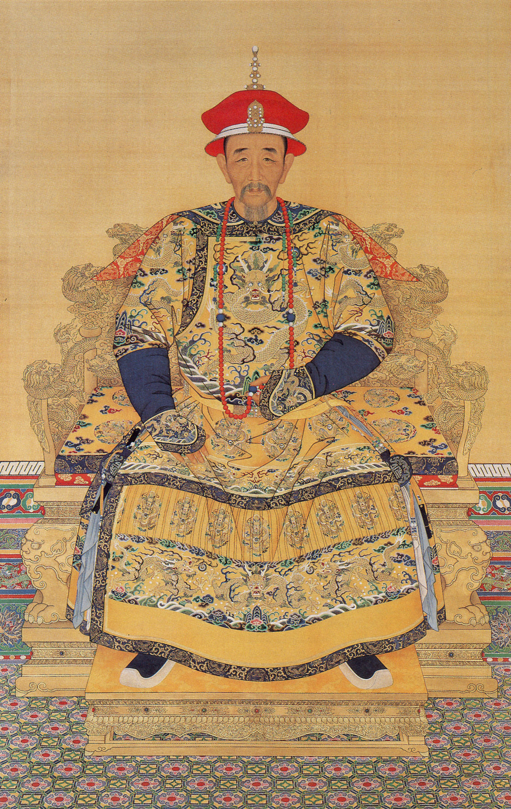
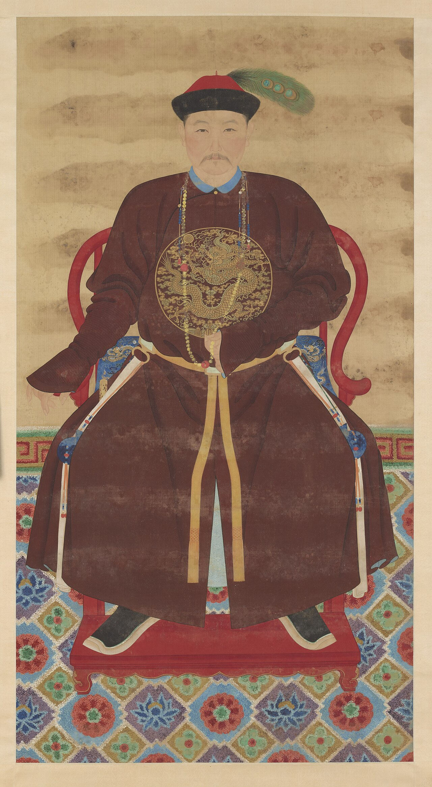
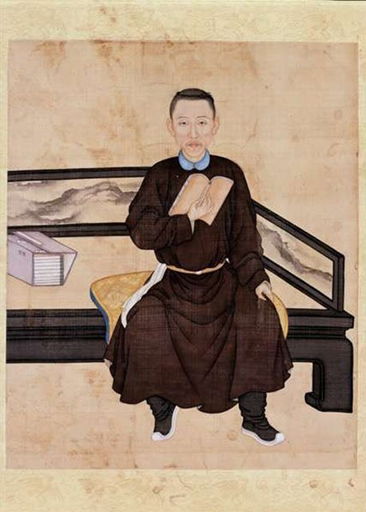
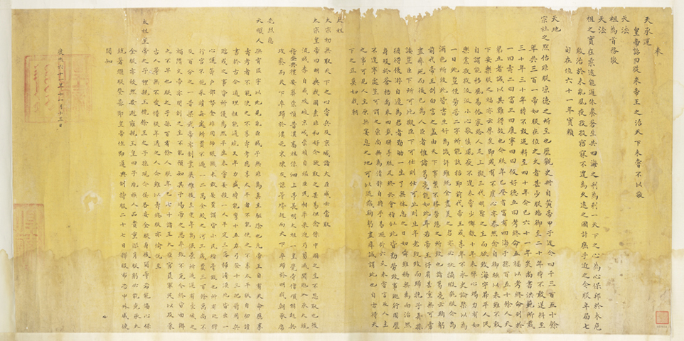
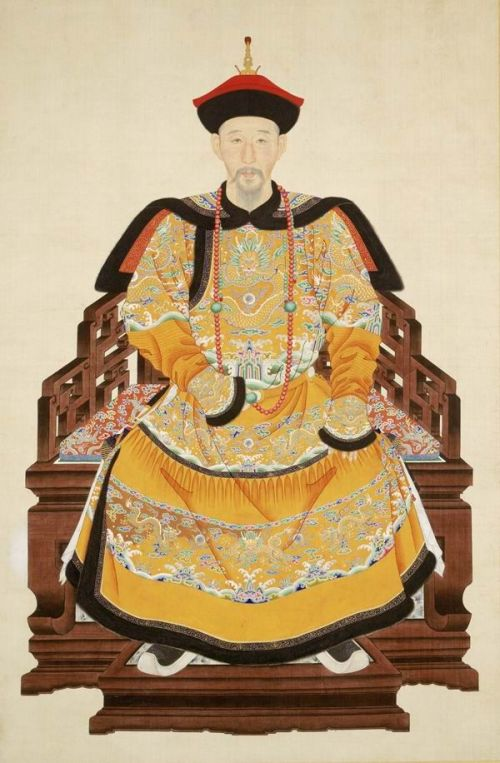
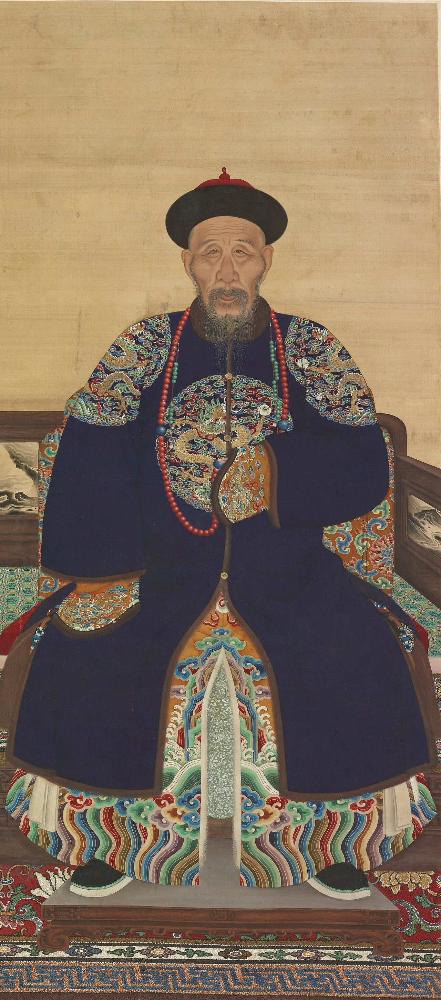
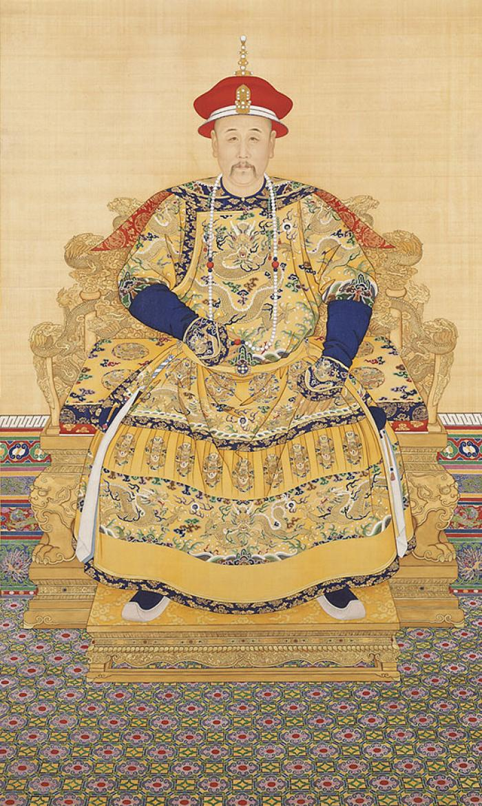
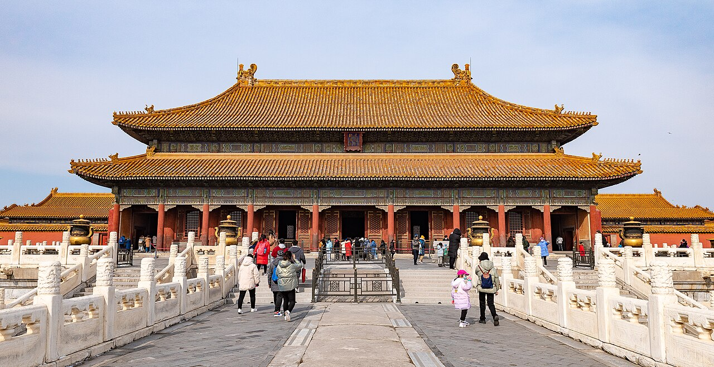

The Imperial Succession Crisis That Reshaped China (1675–1722):
Absolute power, filial betrayal, and the birth of the secret succession system.
Before Succession and House of the Dragon, the Forbidden City was the stage for history’s ultimate high-stakes family war. An aging autocrat who reigned for six decades, an anointed heir driven mad by waiting, and eight brilliant brothers playing a ruthless 3D chess game of stealth, sorcery, and military coups.

Crowned at age 7, Kangxi reigned for 61 years—the longest in Chinese history. He was a polymath, military mastermind, and Confucian sage who crushed the Revolt of the Three Feudatories, subdued the Western Mongols, and secured Taiwan. Yet his greatest defeat occurred inside his own nursery.
During the annual imperial hunt at Rehe, Kangxi’s beloved 18th son fell gravely ill and died. While Kangxi wept, Crown Prince Yinreng showed chilling indifference. Kangxi publicly berated his lack of filial piety and fraternal love.
Terrified of his father’s growing hostility, Yinreng crept to Kangxi's royal tent in the dead of night, parting the fabric to peer inside. Kangxi awoke, gripped by paralyzing terror of an impending assassination.
Weeping before the imperial banners, Kangxi declared: "Yinreng is violent, tyrannical, and unfit to rule." The Crown Prince was stripped of all regalia and bound in chains.
Believing his moment had arrived, the Eldest Prince (Yinzhi) stepped forward with chilling audacity:
Kangxi was horrified by his eldest son’s bloodlust and complete lack of brotherhood.
Seizing the opening, 3rd Prince Yinzhi exposed a shocking secret: Prince 1 had hired a Mongolian lama (Batur Dalai) to bury cursed voodoo dolls beneath Yinreng’s residence to drive him insane. Kangxi investigated and found the cursed figurines. Prince 1 was stripped of his princely titles and sentenced to lifetime solitary confinement.

Stunned by the collapse of two elder sons, Kangxi issued an unprecedented challenge to the court: "Let all princes and civil and military officials nominate a prince to be the new Crown Prince. Whomsoever you recommend by consensus, I will appoint."
Led by Grand Councillor Tong Guowei (Kangxi's maternal uncle) and Chancellor Ma Qi, virtually the entire court submitted petitions nominating 8th Prince Yinsi. Yinsi was charismatic, polite, generous, and backed by the financial muscle of Prince 9.
Instead of being pleased, Kangxi was terrified. He realized Prince 8 had constructed an organized political faction that controlled the palace bureaucracy:
Yinreng was restored to the Eastern Palace, but the damage was irreversible. Aware that Kangxi had only reinstated him to block Prince 8, Yinreng became increasingly paranoid and vengeful.
In late 1711, Kangxi’s imperial spies intercepted correspondence between Yinreng and Tuoba (Commander of Beijing Gendarmerie) plotting an armed palace coup to force Kangxi into retirement as "Retired Emperor" (太上皇).
Kangxi executed the conspirators immediately. In October 1712, Yinreng was deposed for the second and final time, locked inside Xian'an Palace (咸安宫) under armed watch until his death.
Deeply scarred by forty years of betrayal, Kangxi swore a solemn oath to Heaven: He would never again designate a Crown Prince during his lifetime.

While other princes spent fortunes entertaining court officials, Prince 4 styled himself as a detached Chan Buddhist hermit, planting crops at Yuanmingyuan and composing poetry. He appeared utterly devoid of imperial ambition.
Nicknamed the "Cold-Faced Prince" (冷面王), he volunteered for the dirtiest, most thankless administrative jobs: auditing embezzled national grain reserves, recovering treasury deficits, and managing flood relief.





Yongzheng realized that open succession inherently creates a fatal dual power structure: an anointed heir inevitably forms a rival court, attracting corrupt courtiers and triggering royal paranoia.
"Upon the Emperor’s passing, princes and grand councilors assemble before the throne. Both decrees are retrieved and compared. If identical, the new sovereign is acclaimed immediately."
Premature transparency creates dual power centers. An anointed successor inevitably becomes an alternative gravity well for lobbying and rebellion, while an unannounced succession creates explosive instability. Yongzheng’s secret system aligned incentives by eliminating premature lobbying.
Consensus is not safety in an autocracy. Prince 8’s overwhelming popularity with court ministers alienated the sole ultimate decision-maker: Emperor Kangxi. In a centralized structure, an heir loved by subordinates appears as a threat to executive authority.
Solve the patriarch’s hardest headaches. While his brothers threw banquets and formed political caucuses, Prince 4 audited treasury shortfalls, retrieved embezzled grain, and managed disaster relief. He made himself indispensable to state survival.
Control the infrastructure of decision-making. Prince 14 held 300,000 troops 1,500 miles away, but Prince 4 controlled the 9 city gates and the army's grain supply. In any sudden leadership transition, proximity to the command room beats remote military fanfare.
| Prince | Name | Peak Title / Role | Primary Faction | Ultimate Historical Fate |
|---|---|---|---|---|
| 1st Prince | Yinzhi (胤禔) | Prince Zhi (直郡王) | Eldest / Military | Imprisoned for sorcery 1708; died in confinement 1734. |
| 2nd Prince | Yinreng (胤礽) | Crown Prince (皇太子) | The Anointed Heir | Twice deposed; died under house arrest in Xian'an Palace (1725). |
| 3rd Prince | Yinzhi (胤祉) | Prince Cheng (诚亲王) | The Scholar Faction | Stripped of princely title by Yongzheng in 1730; died in 1732. |
| 4th Prince | Yinzhen (胤禛) | Prince Yong ➔ Emperor Yongzheng | Stealth Reformers | VICTOR. Reigned 1722–1735. Revolutionized imperial governance. |
| 8th Prince | Yinsi (胤禩) | Prince Lian (廉亲王) | Court Aristocracy | Renamed "Akesina" (Dog); died in prison under solitary confinement (1726). |
| 9th Prince | Yintang (胤禟) | Prince of 3rd Rank (贝子) | The Financier | Renamed "Sesihe" (Pig); died under harsh prison detention (1726). |
| 10th Prince | Yin'e (胤䄉) | Prince Dun (敦郡王) | Aristocratic Muscle | Stripped of rank and imprisoned in 1724; released by Qianlong in 1737. |
| 13th Prince | Yinxiang (胤祥) | Prince Yi (怡亲王) | Stealth Reformers | Granted Iron-Cap hereditary status; Yongzheng’s revered prime minister. |
| 14th Prince | Yinti (胤禵) | Grand General-Commander (抚远大将军) | Western Army | Stripped of army; confined at imperial tombs until pardoned by Qianlong. |